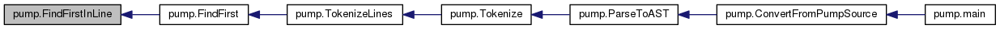

YOUR NAME's CS132 programs
Main Page
Namespaces
Classes
Files
def pump.FindFirstInLine
(
line
,
token_table
)
Definition at line
169
of file
pump.py
.
Referenced by
FindFirst()
.
169
def
FindFirstInLine
(line, token_table):
170
best_match_start = -1
171
for
(regex, token_type)
in
token_table:
172
m = regex.search(line)
173
if
m:
174
# We found regex in lines
175
if
best_match_start < 0
or
m.start() < best_match_start:
176
best_match_start = m.start()
177
best_match_length = m.end() - m.start()
178
best_match_token_type = token_type
179
180
if
best_match_start < 0:
181
return
None
182
183
return
(best_match_start, best_match_length, best_match_token_type)
184
185
pump.FindFirstInLine
def FindFirstInLine(line, token_table)
Definition:
pump.py:169
Here is the caller graph for this function:

pump
Generated on Mon Oct 21 2019 15:37:36 for YOUR NAME's CS132 programs by
1.8.11
 Here is the caller graph for this function:
Here is the caller graph for this function: 1.8.11
1.8.11